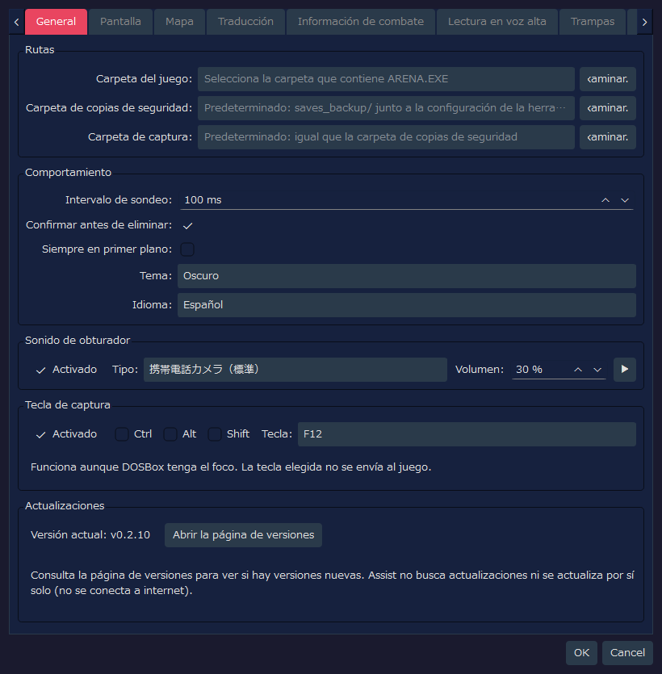
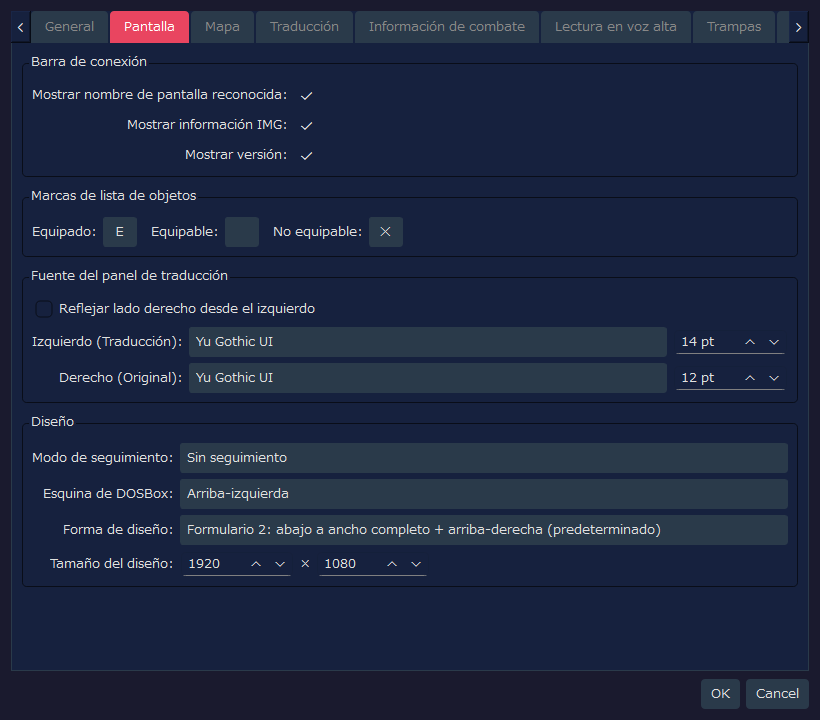
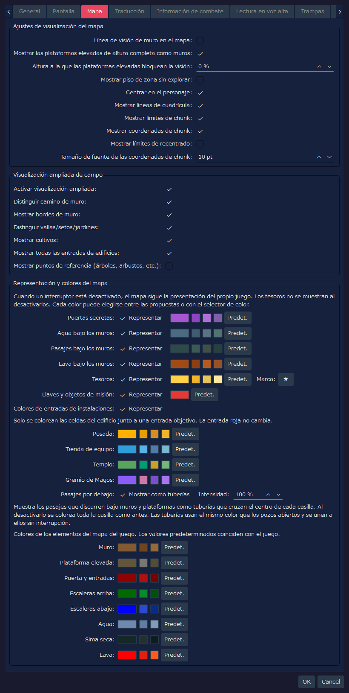
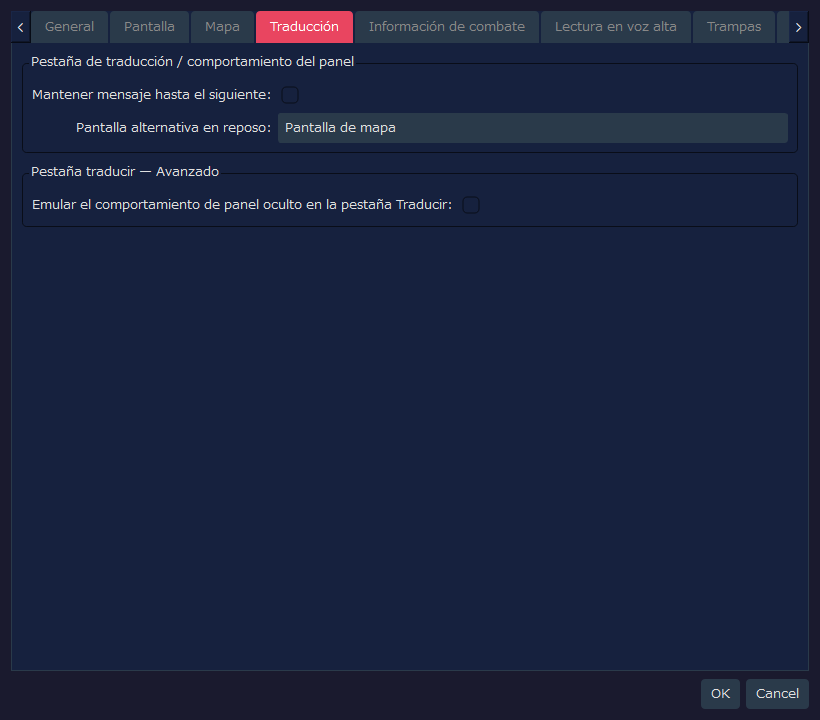
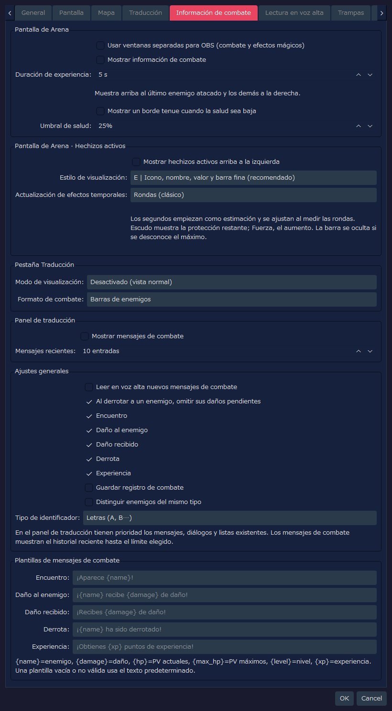
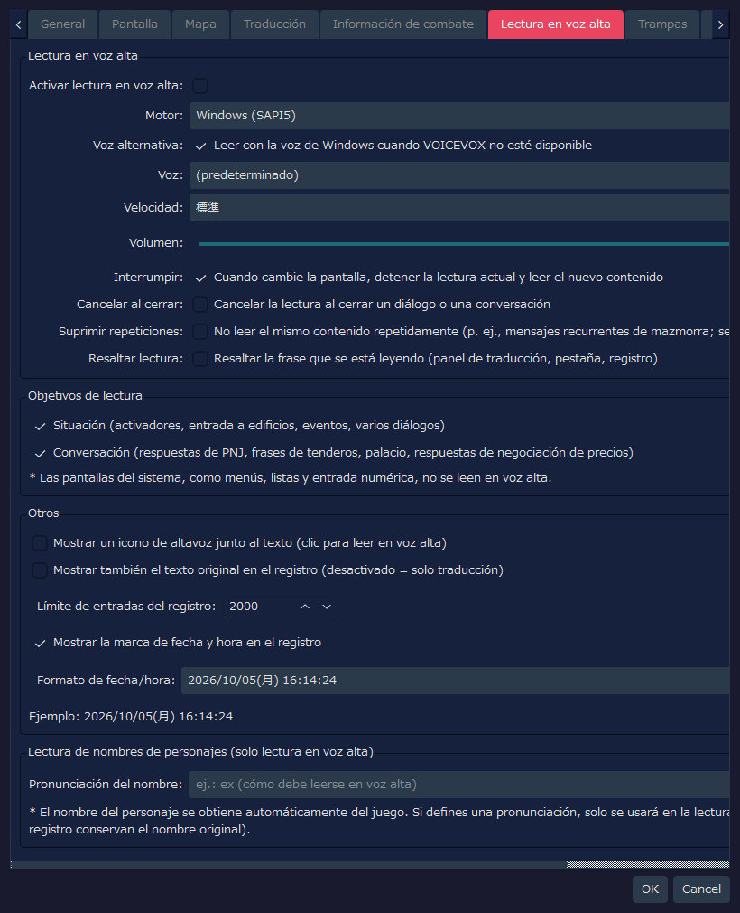
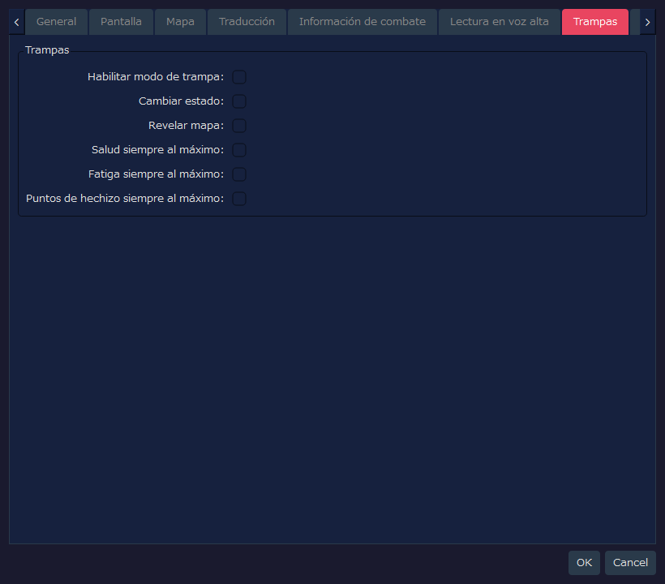
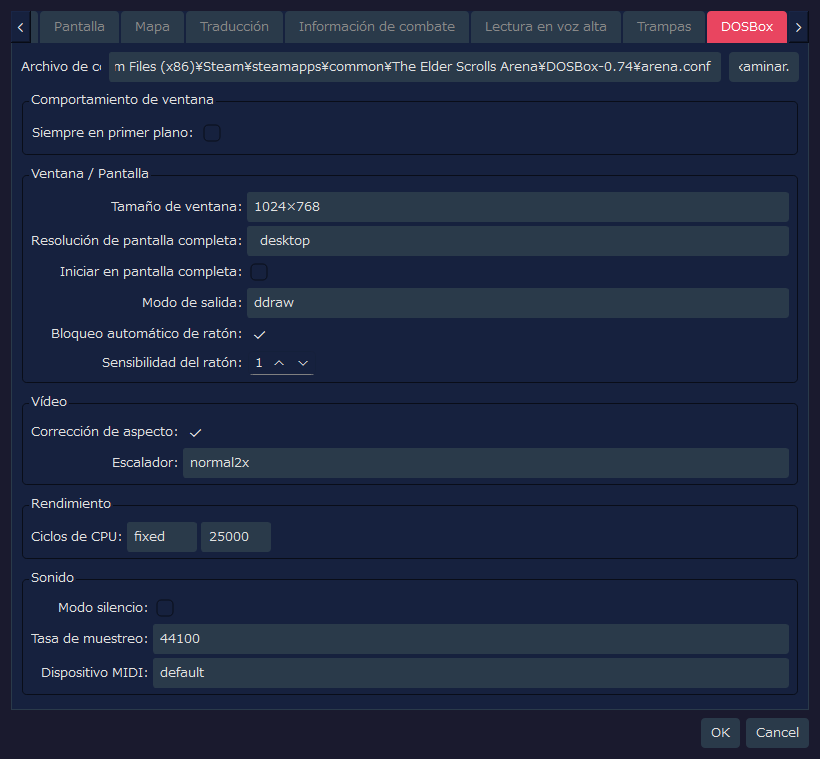

Aquí se incluyen las capturas de cada pestaña del cuadro de ajustes de RTESArenaAssist y la explicación de cada elemento de la interfaz.
Las imágenes son del cuadro de ajustes con los ajustes iniciales de tu idioma de visualización y el tema «Oscuro» predeterminado.
Los valores de la pestaña DOSBox reflejan no solo el archivo de configuración de Assist, sino también lo que se lee del arena.conf de la ruta predeterminada. Por eso, si el arena.conf de tu entorno es distinto, los valores mostrados también cambian.
Es la pestaña donde se configuran las rutas, el comportamiento básico, el sonido de obturador y la tecla de captura, y donde se comprueba tu versión.

| Etiqueta | Valor inicial | Descripción |
|---|---|---|
Carpeta del juego: | Vacío | Carpeta donde están ARENA.EXE de Arena y los archivos de partida guardada. Si no se indica, no se pueden usar la gestión de partidas guardadas ni la lectura de los datos del juego |
Carpeta de copias de seguridad: | Vacío | Destino de las copias de seguridad de las partidas guardadas. Si está vacío, se usa saves_backup/, junto al archivo de configuración de la herramienta |
Carpeta de captura: | Vacío | Destino de las capturas de pantalla. Si está vacío, se usa la misma carpeta que la de copias de seguridad |
Examinar... | - | Elige cada carpeta |
| Etiqueta | Valor inicial | Descripción |
|---|---|---|
Intervalo de sondeo: | 100 ms | Periodo con el que se vigilan la pantalla de DOSBox y el estado de la memoria. El valor inicial es corto para detectar mejor los mensajes breves |
Confirmar antes de eliminar: | Activado | Muestra un cuadro de confirmación al eliminar capturas o copias de seguridad |
Siempre en primer plano: | Desactivado | Muestra la ventana principal de Assist por encima de las demás ventanas |
Tema: | Oscuro | Elige el tema de colores de la interfaz |
Idioma: | Automático (sistema) | Idioma de la interfaz. Si no se indica, se determina automáticamente a partir del idioma del sistema, y el cambio se aplica al reiniciar la aplicación |
| Etiqueta | Valor inicial | Descripción |
|---|---|---|
Activado | Activado | Reproduce un efecto de sonido al guardar una captura de pantalla |
Tipo: | 携帯電話カメラ（標準） | Sonido de obturador que se reproduce («cámara de teléfono móvil (estándar)»; los nombres de los tipos se muestran en japonés). Se puede elegir entre estándar, versión corta, doble, agudos realzados y suave |
Volumen: | 30 % | Volumen de reproducción del sonido de obturador |
▶ | - | Reproduce una muestra del sonido de obturador seleccionado |
Con el foco en la pantalla del juego (DOSBox), basta con pulsar la tecla para guardar una captura. Sirve para capturar mensajes que desaparecen en unos segundos.
| Elemento | Valor predeterminado | Descripción |
|---|---|---|
Activado | Activado | Usa la tecla para capturar |
Ctrl / Alt / Shift | Desactivado | Actívalos si quieres combinar teclas modificadoras |
Tecla: | F12 | Tecla que se usa. Se puede elegir entre F5 a F12, PrintScreen, Pause, ScrollLock, Insert, Home, End, PageUp y PageDown |
| Etiqueta | Valor inicial | Descripción |
|---|---|---|
Versión actual: | - | Versión de Assist que estás usando |
Abrir la página de versiones | - | Abre en el navegador la página de versiones de Assist (la lista de Releases). Aquí se comprueba si hay una versión nueva |
Como Assist no se conecta a internet, no comprueba actualizaciones ni se actualiza automáticamente.
Es la pestaña donde se configuran la barra de conexión, las marcas de equipo de la lista de objetos, la fuente del panel de traducción y el diseño.

| Etiqueta | Valor inicial | Descripción |
|---|---|---|
Mostrar nombre de pantalla reconocida: | Activado | Muestra en la barra de conexión el nombre de la pantalla reconocida actualmente |
Mostrar información IMG: | Activado | Muestra en la barra de conexión la información del IMG detectado |
Mostrar versión: | Activado | Muestra la versión de la aplicación en la barra de conexión y en la barra de estado |
| Etiqueta | Valor inicial | Descripción |
|---|---|---|
Equipado: | Ｅ | Marca de un carácter que se muestra a la izquierda de los objetos equipados |
Equipable: | Vacío | Marca de los objetos que se pueden equipar. El valor inicial está vacío, por lo que no se muestra nada |
No equipable: | ✕ | Marca de un carácter que se muestra a la izquierda de los objetos que no se pueden equipar |
| Etiqueta | Valor inicial | Descripción |
|---|---|---|
Reflejar lado derecho desde el izquierdo | Desactivado | Si se activa, la fuente y el tamaño del lado del texto original pasan a ser los mismos que los del lado de la traducción |
Izquierdo (Traducción): | Predeterminada de la aplicación / 14 pt | Fuente y tamaño que se usan para el texto traducido. Si no hay un nombre de fuente guardado, se elige la fuente predeterminada de la aplicación del entorno de ejecución |
Derecho (Original): | Predeterminada de la aplicación / 12 pt | Fuente y tamaño que se usan para el texto original en inglés. Como la sincronización está desactivada, se pueden configurar aparte del lado de la traducción |
| Etiqueta | Valor inicial | Descripción |
|---|---|---|
Modo de seguimiento: | Sin seguimiento | Elige si, cuando se mueve DOSBox o Assist, el otro lo sigue |
Esquina de DOSBox: | Arriba-izquierda | Esquina de referencia de la pantalla donde se coloca DOSBox en la colocación de un solo paso y en el modo de diseño |
Forma de diseño: | Formulario 2: abajo a ancho completo + arriba-derecha (predeterminado) | Forma de dividir el área de DOSBox y la de los paneles de Assist. El formulario 2 es el diseño estándar, que usa la zona de arriba a la derecha y la de abajo a ancho completo |
Tamaño del diseño: | 1920 x 1080 | Tamaño del lienzo completo en el modo de diseño |
Es la pestaña donde se configuran el mapa de exploración y la visualización ampliada del campo.

| Etiqueta | Valor inicial | Descripción |
|---|---|---|
Línea de visión de muro en el mapa: | Desactivado | Desactivado: no se registran en el mapa las zonas sin explorar que hay al otro lado de un muro. Si se activa, se parece más al Arena original y también se registran las zonas a través de los muros |
Mostrar las plataformas elevadas de altura completa como muros: | Activado | Muestra con el color de muro las plataformas elevadas macizas del suelo al techo. Solo cambia la clasificación visual y no afecta a cómo se bloquea la visión. Las plataformas elevadas que no son de altura completa se siguen mostrando como plataformas elevadas |
Altura a la que las plataformas elevadas bloquean la visión: | 0 % | Tomando la altura del techo como 100 %, las plataformas elevadas cuya parte superior alcanza esta altura o más bloquean la visión en el mapa. Con 0 %, todas las plataformas elevadas bloquean la visión |
Mostrar piso de zona sin explorar: | Desactivado | Desactivado: solo las celdas ya reveladas muestran el color de suelo y se oculta la forma de la zona sin explorar. Activado: todo el mapa se muestra con el color de pergamino |
Centrar en el personaje: | Activado | Cuando el personaje se mueve, el mapa lo sigue automáticamente y se centra en él. Cuando está parado, se puede desplazar el mapa a mano |
Mostrar líneas de cuadrícula: | Activado | Muestra las líneas de cuadrícula de los bordes de las celdas |
Mostrar límites de chunk: | Activado | En el mapa de campo, resalta los límites de chunk, de 64 casillas |
Mostrar coordenadas de chunk: | Activado | Muestra las coordenadas de cada chunk en el mapa de campo para ayudar a ubicarse |
Mostrar límites de recentrado: | Desactivado | Muestra con líneas discontinuas los límites de recentrado del mapa de campo. Es una ayuda para investigar y comprobar la posición |
Tamaño de fuente de las coordenadas de chunk: | 10 pt | Tamaño de letra de las etiquetas de coordenadas de chunk |
| Etiqueta | Valor inicial | Descripción |
|---|---|---|
Activar visualización ampliada: | Activado | Interruptor principal de la visualización ampliada del mapa de campo. Si se desactiva, la visualización se parece al mapa automático del juego |
Distinguir camino de muro: | Activado | Dibuja con colores distintos los caminos transitables y las partes infranqueables, como los edificios y los muros |
Mostrar bordes de muro: | Activado | Muestra el contorno de los muros y el terreno de tipo borde (edge) |
Distinguir vallas/setos/jardines: | Activado | Distingue con líneas de conexión el terreno de tipo borde (edge), como vallas, setos y jardines |
Mostrar cultivos: | Activado | Muestra con un color o una marca propios los cultivos, como el maíz y los campos |
Mostrar todas las entradas de edificios: | Activado | Muestra también en rojo las entradas de casas, tabernas, templos y puertas de ciudad. Las entradas de criptas, torres y calabozos se muestran en rojo con independencia de este ajuste |
Mostrar puntos de referencia (árboles, arbustos, etc.): | Desactivado | Superpone marcas simplificadas de árboles, arbustos, rocas, tumbas, ruinas, etc. Como hay muchos y el mapa se vuelve difícil de leer, el valor inicial es desactivado |
El mapa del juego dibuja sin distinguirlos, por ejemplo, los pasajes que discurren bajo los muros. Aquí se configura si se dibujan distinguiéndolos y el color de cada elemento. Si desactivas «Representar» en una fila, ese elemento vuelve a mostrarse igual que en el mapa del juego (con Tesoros desactivado no se muestra nada).
| Etiqueta | Valor inicial | Descripción |
|---|---|---|
Puertas secretas: | Activado | Muestra con un color propio las puertas secretas ya descubiertas. Hasta que se descubren, siguen siendo un muro |
Agua bajo los muros: | Activado | Muestra con un color propio los canales de agua que discurren bajo los muros. No se muestran hasta que se descubren pasando realmente por ahí |
Pasajes bajo los muros: | Activado | Muestra los pasajes que discurren bajo los muros. No se muestran hasta que se descubren pasando realmente por ahí |
Lava bajo los muros: | Activado | Muestra con un color propio la lava que discurre bajo los muros. No se muestra hasta que se descubre pasando realmente por ahí |
Tesoros: | Activado | Superpone una marca en los lugares donde has conseguido tesoros. El carácter de la marca se puede cambiar en el campo de la derecha. Cuando «Revelar mapa» de la pestaña Trampas está activado, se muestran todos los lugares con tesoro, los hayas conseguido o no |
Llaves y objetos de misión: | Activado | Entre los tesoros, muestra con otro color la marca de las llaves y de los objetos de misión. Si se desactiva, se muestran con el mismo color que los tesoros. Si Tesoros está desactivado, no se muestran |
Colores de entradas de instalaciones: | Activado | En el mapa de la ciudad, sustituye las celdas con el color de edificio que lindan con la entrada de una posada, una tienda de equipo, un templo o el Gremio de Magos por el color de cada instalación. El color de las entradas rojas no cambia. El color de cada instalación se puede cambiar en los campos de abajo |
Pasajes por debajo: | Mostrar como tuberías / Intensidad 100 % | Muestra los pasajes que discurren bajo muros o plataformas elevadas como una tubería que cruza el centro de la celda. Si se desactiva, se vuelve a colorear toda la celda como antes. El color de la tubería es el mismo que el de los pozos y se une a ellos sin interrupción. Si bajas la Intensidad, la tubería queda más discreta |
Al hacer clic en la muestra de color que hay a la derecha de cada elemento, se puede elegir cualquier color. Los botones pequeños de al lado son colores propuestos fáciles de elegir y Predet. es el botón que devuelve el color original. Los colores de los elementos propios del juego (muros, plataformas elevadas, puertas y entradas, escaleras (arriba y abajo), agua, simas secas y lava) se pueden cambiar del mismo modo (los valores predeterminados son los mismos colores que el juego).
Es la pestaña donde se configuran las visualizaciones auxiliares del panel de traducción y de la pestaña Traducir.

| Etiqueta | Valor inicial | Descripción |
|---|---|---|
Mantener mensaje hasta el siguiente: | Desactivado | Indica si los mensajes de activadores y de interacción con objetos permanecen en el panel de traducción hasta que llegue el siguiente mensaje |
Pantalla alternativa en reposo: | Pantalla de mapa | Elige qué se muestra en toda la pestaña Traducir cuando se está explorando y no hay texto traducido. Con el valor inicial se da prioridad a la pantalla de mapa |
| Etiqueta | Valor inicial | Descripción |
|---|---|---|
Emular el comportamiento de panel oculto en la pestaña Traducir: | Desactivado | Si se activa, los resultados de traducción y los mensajes de diálogo se muestran en la pestaña Traducir, igual que cuando se oculta el panel de traducción. Es un ajuste avanzado para comprobaciones |
Puedes sustituir partes de una traducción incluida por la tuya o añadir un idioma nuevo.
Exportar una plantilla (para crear un idioma nuevo, elige (plantilla vacía para un idioma nuevo)), pulsa Exportar... y guarda el archivo JSON. Si activas Incluir el original en inglés, se añade el original en inglés (el original del texto del juego solo se añade en un equipo con la carpeta del juego configurada y el diccionario ya creado). Guárdalo fuera de la carpeta de traducciones (véase más abajo).text de las entradas que quieras cambiar. Las entradas con text vacío conservan la traducción incluida (en un idioma nuevo, la del idioma de meta.fallback). No cambies las claves ni los marcadores como %xx y {name} (no se cargan las entradas con marcadores que la traducción de referencia no tiene, ni las que contienen < o >). source (el original en inglés) y ref (una traducción de referencia) no se usan al cargar.lang al principio (un código de idioma, por ejemplo tr) y meta.display_name (el nombre que aparece en la lista de idiomas). meta.fallback es el idioma incluido que se usa para las entradas sin traducir (en por defecto); con meta.direction en rtl el texto se muestra de derecha a izquierda.Importar un archivo de traducción, pulsa Importar... y elige el archivo editado. Se importa si supera las comprobaciones. Un idioma nuevo se añade a los idiomas de la pestaña General. Los cambios se aplican al reiniciar la aplicación.La plantilla de un idioma incluido contiene la traducción actual de todas las entradas. Borra las entradas que no cambies o deja su text vacío. Las entradas que conserves quedan fijadas a tu redacción y no reciben las mejoras posteriores de la traducción incluida.
Ejemplo 1: cambiar solo una entrada de la traducción alemana incluida (solo se sustituyen las entradas que escribas).
{
"schema": "rtesaa.user_translation",
"schema_version": 1,
"lang": "de",
"texts": {
"ui_app": {
"settings.title": "Meine Einstellungen"
}
}
} |
Ejemplo 2: un idioma nuevo (turco). ref es solo de consulta y no se usa al cargar.
{
"schema": "rtesaa.user_translation",
"schema_version": 1,
"lang": "tr",
"meta": { "display_name": "Türkçe", "fallback": "en", "direction": "ltr" },
"texts": {
"ui_app": {
"settings.title": { "ref": "Settings", "text": "Ayarlar" }
}
}
} |
Los archivos importados aparecen en la lista Cargados. Selecciona uno y pulsa Eliminar para volver a la traducción incluida (un idioma nuevo se elimina). Abrir carpeta abre la carpeta translations, situada junto al archivo de ajustes. Los JSON que pongas allí se cargan automáticamente al iniciar. En un idioma añadido, los documentos como el manual se muestran en inglés.
Configura por separado dónde se muestran el combate y los hechizos activos. Las nuevas funciones de visualización, lectura en voz alta y guardado están desactivadas por defecto. Los valores guardados en versiones de desarrollo anteriores se conservan tal cual. Los textos mostrados están disponibles en japonés, inglés, español, alemán, francés, italiano y ruso.

| Elemento | Valor inicial | Descripción |
|---|---|---|
Usar ventanas separadas para OBS (combate y efectos mágicos) | Desactivado | Reúne la información de combate y los hechizos activos en una sola ventana que se puede elegir con la captura de ventana de OBS |
Mostrar información de combate | Desactivado | Muestra arriba en la pantalla al último oponente con el que se ha intercambiado golpes y que se está viendo, y a la derecha a los demás enemigos vivos con los que ya te has encontrado, aunque estén fuera de la vista. Permite ver salud, fatiga y puntos de hechizo, además del daño causado y las derrotas. El daño recibido se muestra en el borde inferior del área de exploración |
Duración de experiencia: | 5 s | Muestra abajo a la derecha la experiencia en el momento de obtenerla y hace desaparecer cada recuadro tras los segundos indicados. Si se obtiene más seguida, los recuadros antiguos se desplazan hacia la izquierda (de 1 a 60 segundos) |
Mostrar un borde tenue cuando la salud sea baja | Desactivado | Cuando la salud baja del porcentaje indicado, hace parpadear suavemente el borde de la pantalla de exploración. Se puede activar aunque no uses la visualización de enemigos de la información de combate |
Umbral de salud: | 25% | Porcentaje a partir del cual empieza a mostrarse el borde de salud baja (de 1 a 99 % de la salud máxima) |
La visualización del daño recibido desaparece sola unos 5 segundos después de producirse. La visión de los enemigos usa el mismo criterio en cualquier lugar. Si no se puede determinar el mapa o las coordenadas, no se muestran enemigos por suposición.
Para grabar con OBS, activa este ajuste, elige «Captura de ventana» y luego RTESArenaAssist オーバーレイ (el título de la ventana de superposición; el título se muestra en japonés), permite la transparencia y colócala por encima de la imagen del juego. La información de combate y los hechizos activos aparecen en la misma fuente.
| Elemento | Valor inicial | Descripción |
|---|---|---|
Mostrar hechizos activos arriba a la izquierda | Desactivado | Muestra el estado de Luz, Escudo, Aumento de fuerza, Resistencia al fuego y Levitación |
Estilo de visualización: | E | Se elige entre A «nombre y valor restante», B «nombre y barra horizontal», C «icono y barra horizontal», D «icono y sombreado horario», E «icono, nombre, valor y barra fina» y F «indicador compacto» |
Actualización de efectos temporales: | Rondas (clásico) | Elige si Luz, Resistencia al fuego y Levitación se actualizan por rondas o con segundos aproximados cada segundo. Los segundos se ajustan a partir del intervalo de avance dentro del juego, por lo que, si la velocidad de avance cambia por DETAIL u otros ajustes, no siempre equivalen a una proporción fija |
Escudo muestra la protección restante y Aumento de fuerza el aumento. En una conexión a mitad de partida en la que no se puede conocer el valor máximo, a veces se omite la barra. La visualización en segundos es aproximada y la finalización del efecto se rige por el estado dentro del juego.
| Elemento | Valor inicial | Descripción |
|---|---|---|
Modo de visualización: | Desactivado (vista normal) | Se elige entre mantener la vista normal, usar a la vez la vista normal y la información de combate, o mostrar la información de combate a pantalla completa |
Formato de combate: | Barras de enemigos | Cuando se muestra la información de combate, elige si es información de texto o barras de enemigos |
| Elemento | Valor inicial | Descripción |
|---|---|---|
Mostrar mensajes de combate | Desactivado | Muestra los textos de combate en el panel de traducción. Si aparecen los mensajes, conversaciones y listas de siempre, esos tienen prioridad |
Mensajes recientes: | 10 entradas | Muestra de 1 a 50 de los textos de combate más recientes. Al superar el número, se quitan los textos antiguos y se añaden los nuevos |
| Elemento | Valor inicial | Descripción |
|---|---|---|
Leer en voz alta nuevos mensajes de combate | Desactivado | Si la lectura en voz alta está activada en general, lee los nuevos textos de combate en el orden en que se producen. No excluye los textos idénticos recientes y el siguiente daño no interrumpe la lectura anterior |
Al derrotar a un enemigo, omitir sus daños pendientes | Activado | Al derrotar a un enemigo, corta la lectura en curso y la pendiente del daño causado y recibido con ese enemigo. La lectura de otros enemigos continúa |
Guardar registro de combate | Desactivado | Guarda el historial de combate aparte del registro normal. Solo si hay datos registrados, se muestra el cambio de registro dentro de la pestaña Registro |
Distinguir enemigos del mismo tipo | Desactivado | Solo cuando hay varios enemigos con el mismo nombre, añade detrás del nombre un símbolo para distinguirlos |
Tipo de identificador: | Letras (A, B…) | Se elige entre A, B… o 1, 2… |
Plantillas de mensajes de combate | Texto predeterminado de cada idioma | Edita los textos de encuentro, daño al enemigo, daño recibido, derrota y experiencia. Un campo vacío o una variable no válida vuelve al texto predeterminado |
Es la pestaña donde se configuran la lectura en voz alta de los textos traducidos, lo que se lee, la visualización del registro y la lectura de los nombres de personajes.

| Etiqueta | Valor inicial | Descripción |
|---|---|---|
Activar lectura en voz alta: | Desactivado | Activa en conjunto la función de lectura en voz alta de los textos traducidos |
Motor: | Windows (SAPI5) | Elige el motor de lectura en voz alta. VOICEVOX se puede elegir si el motor local de VOICEVOX está en ejecución |
Voz alternativa: | Activado | Si has elegido VOICEVOX y no se puede usar, lee con la voz de Windows los textos que no se han podido leer. Si se desactiva, no se lee |
Voz: | (predeterminado) | Se muestra cuando el motor es Windows (SAPI5). Voz SAPI que se usa. Con (predeterminado) se usa la voz predeterminada del sistema operativo |
Personaje: | El personaje con el ID de estilo 0 | Se muestra cuando el motor es VOICEVOX. Personaje de VOICEVOX que se usa para la lectura |
Estilo: | ID de estilo 0 | Se muestra cuando el motor es VOICEVOX. Estilo de voz del personaje elegido |
🔊 Probar | - | Se muestra cuando el motor es VOICEVOX. Lee una frase corta de prueba con el personaje y el estilo elegidos |
Velocidad: | 標準 | Velocidad de lectura en voz alta (el valor inicial se muestra en japonés y significa «estándar») |
Volumen: | 100 | Volumen de la lectura en voz alta. Se configura en el rango de 0 a 100 |
Interrumpir: | Activado | Cuando cambia lo que se muestra, detiene la lectura anterior y lee el contenido nuevo. También se detiene al volver de la respuesta de un PNJ al menú |
Cancelar al cerrar: | Desactivado | Al cerrar un diálogo o una conversación, detiene la lectura en curso |
Suprimir repeticiones: | Desactivado | No lee repetidamente el mismo contenido (por ejemplo, los mensajes repetidos de los calabozos). Se conserva en el registro |
Resaltar lectura: | Desactivado | Colorea la frase que se está leyendo (panel de traducción, pestaña Traducir y registro) |
Si no se encuentra VOICEVOX, se muestra «Inicia VOICEVOX para poder seleccionarlo (127.0.0.1:50021).». Si abres de nuevo el cuadro de ajustes después de iniciar VOICEVOX, puedes elegir el personaje y el estilo.
| Etiqueta | Valor inicial | Descripción |
|---|---|---|
Situación (activadores, entrada a edificios, eventos, varios diálogos) | Activado | Incluye en la lectura los textos que describen la situación, como activadores, entrada a edificios, eventos y diversos diálogos |
Conversación (respuestas de PNJ, frases de tenderos, palacio, respuestas de negociación de precios) | Activado | Incluye en la lectura los textos de conversación, como las respuestas de PNJ, las frases de tenderos, el palacio y las respuestas de negociación de precios |
Las pantallas del sistema, como menús, listas y entrada numérica, no se leen en voz alta.
| Etiqueta | Valor inicial | Descripción |
|---|---|---|
Mostrar un icono de altavoz junto al texto (clic para leer en voz alta) | Desactivado | Muestra junto al texto un icono de altavoz para leerlo en voz alta con un clic |
Mostrar también el texto original en el registro (desactivado = solo traducción) | Desactivado | Muestra también el texto original en inglés en el registro de traducción. Desactivado, solo se muestra la traducción |
Límite de entradas del registro: | 2000 | Límite del número de entradas de registro que se guardan. Las entradas antiguas que lo superan se eliminan automáticamente |
Mostrar la marca de fecha y hora en el registro | Activado | Muestra la fecha y hora de registro en las entradas del registro |
Formato de fecha/hora: | yyyy/MM/dd(aaa) HH:mm:ss | Formato de visualización de la fecha y hora del registro. Se puede elegir un formato predefinido o uno personalizado |
| Etiqueta | Valor inicial | Descripción |
|---|---|---|
Pronunciación del nombre: | Vacío | Sustituye el nombre del personaje obtenido automáticamente del juego por la pronunciación indicada, solo al leer en voz alta. En la pantalla y en el registro se conserva el nombre original |
Es la pestaña donde se configuran las funciones de ayuda que reescriben valores del juego o los mantienen siempre al máximo.

| Etiqueta | Valor inicial | Descripción |
|---|---|---|
Habilitar modo de trampa: | Desactivado | Interruptor principal de todas las funciones de trampas. Aunque actives solo este, no cambia nada mientras no actives los ajustes secundarios |
Cambiar estado: | Desactivado | Permite cambiar el estado, como editar los atributos |
Revelar mapa: | Desactivado | Con las trampas activadas, muestra todo el mapa |
Salud siempre al máximo: | Desactivado | Con las trampas activadas, si la salud actual es inferior al máximo, la devuelve al máximo |
Fatiga siempre al máximo: | Desactivado | Con las trampas activadas, devuelve la fatiga actual al máximo |
Puntos de hechizo siempre al máximo: | Desactivado | Con las trampas activadas, devuelve los puntos de hechizo actuales al máximo |
Es la pestaña que lee el arena.conf de DOSBox y configura la visualización de la ventana, el vídeo, el rendimiento y el sonido.

| Etiqueta | Valor inicial | Descripción |
|---|---|---|
Archivo de configuración | arena.conf de la ruta predeterminada | Archivo de configuración de DOSBox. Si el ajuste de Assist está vacío, se lee como ruta predeterminada la ubicación estándar de la versión de Steam de Arena |
Examinar... | - | Elige un arena.conf cualquiera |
Siempre en primer plano: | Desactivado | Muestra la ventana de DOSBox por encima de las demás ventanas |
| Etiqueta | Valor inicial | Descripción |
|---|---|---|
Tamaño de ventana: | 1024×768 | windowresolution. Se elige entre los valores predefinidos y, si se elige personalizado, se editan los campos numéricos de ancho y alto |
Resolución de pantalla completa: | desktop | fullresolution. Indica la resolución en pantalla completa |
Iniciar en pantalla completa: | Desactivado | fullscreen. Indica si DOSBox se inicia en pantalla completa |
Modo de salida: | ddraw | output. Modo de salida de dibujo de DOSBox |
Bloqueo automático de ratón: | Activado | autolock. Bloquea automáticamente el ratón dentro de la pantalla de DOSBox |
Sensibilidad del ratón: | 100 | sensitivity. Sensibilidad del ratón dentro de DOSBox |
| Etiqueta | Valor inicial | Descripción |
|---|---|---|
Corrección de aspecto: | Activado | aspect. Corrige la relación de aspecto de la imagen |
Escalador: | normal2x | scaler. Filtro de ampliación de la pantalla de DOSBox |
| Etiqueta | Valor inicial | Descripción |
|---|---|---|
Ciclos de CPU: | fixed 25000 | cycles. Indica la velocidad de emulación de la CPU. Con fixed, se activa el campo numérico de la derecha |
| Etiqueta | Valor inicial | Descripción |
|---|---|---|
Modo silencio: | Desactivado | nosound. Desactiva el sonido de DOSBox |
Tasa de muestreo: | 44100 | rate. Tasa de muestreo del mezclador |
Dispositivo MIDI: | default | mididevice. Dispositivo que se usa para la reproducción MIDI |